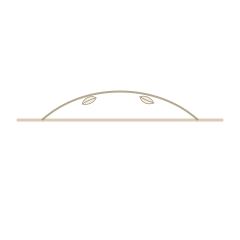

Laser hair removal
Laser hair removal is planned through preparation, phototype, session rhythm and aftercare.

Concept 29 · Solace · Laser
Laser hair removal, laser rejuvenation, technology-based treatments and aftercare are presented as evaluation-led topics.


doctor journal notecards
Logo, FS monogram, portrait treatment, botanical detail and custom icons are built as a local Sofiati asset pack for this page.
doctor journal
Laser topics are introduced with safety, restraint and professional judgement.
Laser hair removal is planned through preparation, phototype, session rhythm and aftercare.
Laser rejuvenation focuses on skin quality and realistic expectations.
Laser care stays evaluation-led.
doctor journalSkin care focuses on texture, clarity, sensitivity and barrier respect.
Results may vary according to individual characteristics, professional evaluation, treatment indication, protocol, number of sessions and aftercare. Information on this website is educational and does not replace an individual professional evaluation.
Consultation
A short consultation route keeps decisions calm, private and evaluation-led.
CRBM 6277 · Londrina, PR